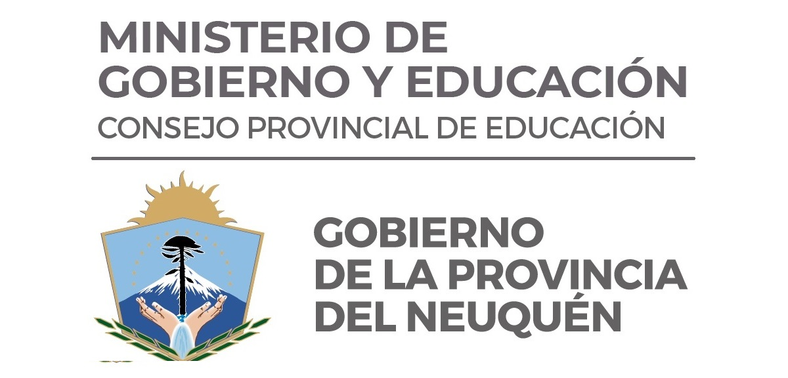

Propuesta Académica
Nuestra escuela ofrece en la actualidad distintos trayectos formativos de nivel terciario aprobados y validados en la provincia por el Consejo Provincial de Educación (CPE) y a nivel nacional por el Instituto Nacional de Formación Docente (INFD).
